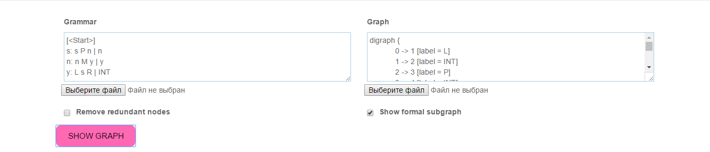
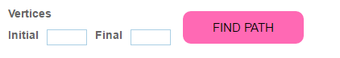
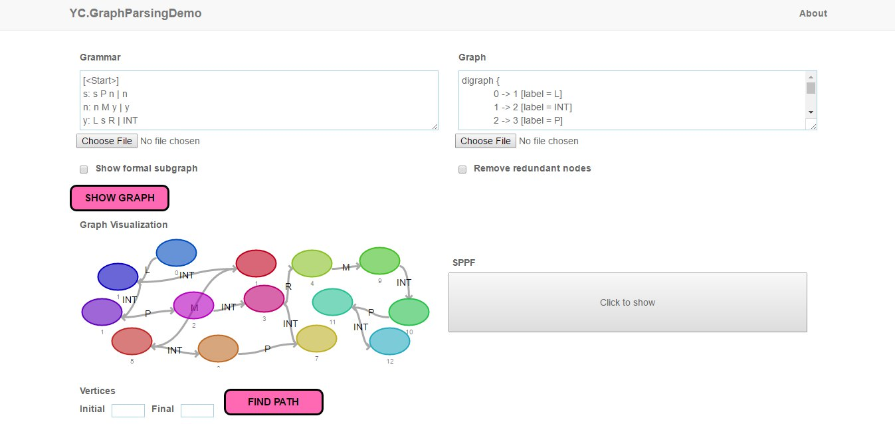

Tutorial
Start
To start YCGraphParsingDemo application you need to type in grammar and graph and press "SHOW GRAPH" button.  You can also upload files from your device.
If you want to show formal subgraph of input graph and/or remove redundant nodes from SPPF, use checkboxes under the input forms.
To extract minimal length path between two specific vertices of the input graph, write their numbers in special form and press "FIND PATH" 
Using examples
- Example 1 
- Example 2
- Example 3